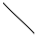
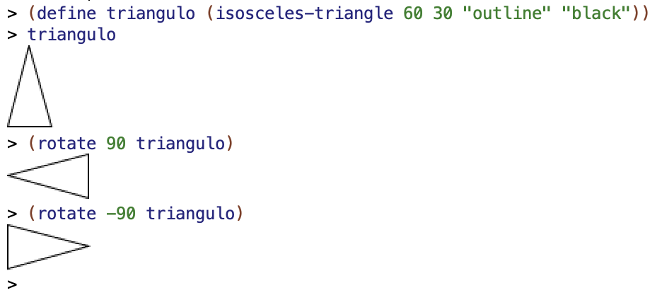
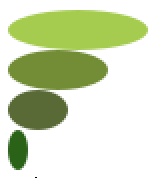
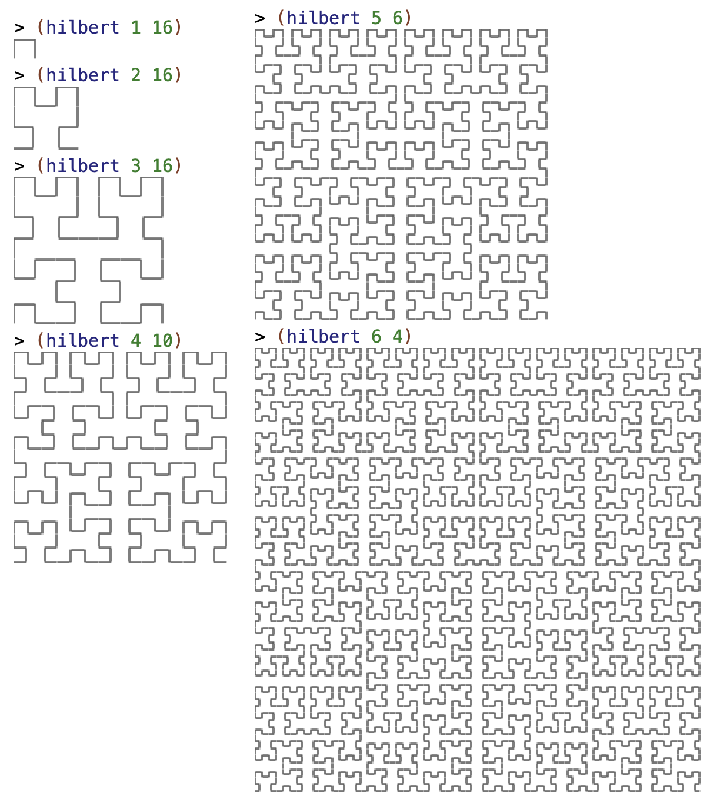

Notas de clase de la semana 5 de LPP.
(define (mi-length items)
(if (null? items)
0
(+ 1 (mi-length (rest items)))))(mi-length
'(a b c d))(mi-length '(a b c d))
(+ 1 (mi-length '(b c d)))
(+ 1 (+ 1 (mi-length '(c d))))
(+ 1 (+ 1 (+ 1 (mi-length '(d)))))
(+ 1 (+ 1 (+ 1 (+ 1 (mi-length '())))))
(+ 1 (+ 1 (+ 1 (+ 1 0))))
(+ 1 (+ 1 (+ 1 1)))
(+ 1 (+ 1 2))
(+ 1 3)
4El coste espacial de un programa es una función que relaciona la memoria consumida por una llamada para resolver un problema con alguna variable que determina el tamaño del problema a resolver.
En el caso de la función mi-length el tamaño del problema viene
dado por la longitud de la lista. El coste espacial de mi-lenght
es O(n), siendo n la longitud de la lista.
Veamos con un ejemplo que el coste de las llamadas recursivas puede dispararse. Supongamos la famosa [secuencia de Fibonacci]: 0,1,1,2,3,5,8,13,...
Secuencia de Fibonacci en la Wikipedia
Formulación matemática de la secuencia de Fibonacci:
Fibonacci(n) = Fibonacci(n-1) + Fibonacci(n-2)
Fibonacci(0) = 0
Fibonacci(1) = 1(define (fib n)
(cond ((= n 0) 0)
((= n 1) 1)
(else (+ (fib (- n 1))
(fib (- n 2))))))
Cada llamada a la recursión produce otras dos llamadas, por lo que el número de llamadas finales es 2^n siendo n el número que se pasa a la función.
El coste espacial y temporal es exponencial, O(2^n).
¿Qué pasa si intentamos evaluar (fib 40)?
Solución: Construimos la recursión de forma que en cada llamada se haga un cálculo parcial y en el caso base se pueda devolver directamente el resultado obtenido.
Este estilo de recursión se denomina recursión por la cola (tail recursion, en inglés).
(mi-length-iter lista result) que es la que
define el proceso iterativoresult) que es el parámetro en el
que se irán guardando los cálculos intermediosresult y se devuelve(define (mi-length lista)
(mi-length-iter lista 0))
(define (mi-length-iter lista result)
(if (null? lista)
result
(mi-length-iter (rest lista) (+ result 1))))Secuencia de llamadas:
(mi-length '(a b c d)) =>
(mi-length-iter '(a b c d) 0) =>
(mi-length-iter '(b c d) 1) =>
(mi-length-iter '(c d) 2) =>
(mi-length-iter '(d) 3) =>
(mi-length-iter '() 4) =>
4(max lista)
que devuelve el máximo de una lista de números?(define (max lista)
(max-iter (rest lista) (first lista)))
(define (max-iter lista result)
(if (null? lista)
result
(max-iter (rest lista) (if (> result (first lista))
result
(first lista)))))(mi-reverse lista)
que devuelve una lista invertida?(define (mi-reverse lista)
(reverse-iter lista '()))
(define (reverse-iter lista result)
(if (null? lista)
result
(reverse-iter (rest lista) (cons (first lista) result))))(define (fib n)
(fib-iter 1 0 n))
(define (fib-iter a b count)
(if (= count 0)
b
(fib-iter (+ a b) a (- count 1))))1
1 1
1 2 1
1 3 3 1
1 4 6 4 1
1 5 10 10 5 1
1 6 15 20 15 6 1
1 7 21 35 35 21 7 1
...-- Formulación matemática:
Pascal(n, 0) = 1
Pascal(n, n) = 1
Pascal(fila, columna) = Pascal(fila-1,columna-1) + Pascal(fila-1, columna)La versión recursiva pura:
(define (pascal row col)
(cond ((= col 0) 1)
((= col row) 1)
(else (+ (pascal (- row 1) (- col 1))
(pascal (- row 1) col) ))))
(pascal 4 2)
(pascal 8 4)
(pascal 27 13)Utilizamos enfoque iterativo: cada fila se genera a partir de la
anterior (lo hace la función pascal-sig-fila que recibe
como parámetro la fila anterior).
Por ejemplo:
(pascal-sig-fila '(1 3 3 1))
; ⇒ (1 4 6 4 1)Usando la función anterior definimos la función pascal-fila a la que
le pasamos el número de fila n y nos devuelve la lista de n+1
números que constituyen la fila n del triángulo de Pascal:
fila 0 = (1)
fila 1 = (1 1)
fila 2 = (1 2 1)
fila 3 = (1 3 3 1)
fila 4 = (1 4 6 4 1)
...El código completo:
(define (pascal fila col)
(list-ref (pascal-fila '(1) fila) col))
(define (pascal-fila lista-fila n)
(if (= 0 n)
lista-fila
(pascal-fila (pascal-sig-fila lista-fila) (- n 1))))
(define (pascal-sig-fila lista-fila)
(append '(1)
(pascal-suma-dos-a-dos lista-fila)
'(1)))
(define (pascal-suma-dos-a-dos lista-fila)
(if (null? (rest lista-fila))
'()
(cons (+ (first lista-fila) (second lista-fila))
(pascal-suma-dos-a-dos (rest lista-fila)))))Una alternativa que mantiene la elegancia de los procesos recursivos
y la eficiencia de los iterativos es la
memoization. Si miramos
la traza de (fib 4) podemos ver que el coste está producido
por la repetición de llamadas; por ejemplo (fib 3) se evalúa
2 veces.
En programación funcional la llamada a (fib 3) siempre va a
devolver el mismo valor.
Podemos guardar el valor devuelto por la primera llamada en alguna estructura (una lista de asociación, por ejemplo) y no volver a realizar la llamada a la recursión las siguientes veces.
Usamos un diccionario con los métodos put y get que actualizan su información con mutación (no pertenecen al paradigma funcional).
La función (make-dic) devuelve un diccionario vacío.
La función (put key value dic) asocia un valor a una clave, la
guarda en el diccionario (con mutación) y devuelve el valor.
La función (get key dic) devuelve el valor del diccionario asociado a
una clave (si no existe devuelve #f).
El predicado (key-exists? key dic) devuelve #f en que no exista la clave y #t si existe.
Ejemplos:
(define mi-dic (make-dic))
(put 1 10 mi-dic) ; ⇒ 10
(get 1 mi-dic) ; ⇒ 10
(key-exists? 2 dic) ; ⇒ #fLa implementación utiliza parejas mutables. Está
incluida en el fichero lpp.rkt.
La función fib-memo realiza el cálculo de la serie de Fibonacci
utilizando el proceso recursivo visto anteriormente y la técnica de
memoización, en la que se consulta el valor de Fibonacci en el diccionario
antes de realizar la llamada recursiva:
(require "lpp.rkt")
(define (fib-memo n dic)
(cond ((= n 0) 0)
((= n 1) 1)
((key-exists? n dic) (get n dic))
(else (put n (+ (fib-memo (- n 1) dic)
(fib-memo (- n 2) dic)) dic))))(define dic (crea-diccionario))
(fib-memo 200 dic)
; ⇒ 2805711729925101400376119324130386771895252htdp/image.Círculo, cuadrado, rectángulo y triángulo:
#lang racket
(require 2htdp/image)
(circle 30 "solid" "blue")
(square 30 "outline" "black")
(rectangle 80 40 "solid" "gray")
(triangle 40 "solid" "red")
Podemos también construir un triángulo isósceles indicando la longitud de sus lados iguales y el ángulo entre ellos:
(isosceles-triangle 60 30 "outline" "black") 
Y también trazar una línea desde la esquina superior izquierda hasta la coordenada (x, y) (la coordenada x crece hacia la derecha y la y hacia abajo):
(line 30 30 "black")
Podemos rotar una imagen un ángulo, expresado en grados sexagesimales en el sentido contrario de las agujas del reloj. Por ejemplo, podemos rotar el triángulo isósceles anterior:
(define triangulo (isosceles-triangle 60 30 "outline" "black"))
(rotate 90 triangulo)
; ⇒ imagen rotada 90 grados en sentido contrario a las agujas del reloj
(rotate -90 triangulo)
; ⇒ imagen rotada 90 grados en sentido de las agujas del reloj
Podemos también combinar imágenes, agrupándolas con las funciones
above y beside:
(above (ellipse 70 20 "solid" "gray")
(ellipse 50 20 "solid" "darkgray")
(ellipse 30 20 "solid" "dimgray")
(ellipse 10 20 "solid" "black"))
(beside (ellipse 20 70 "solid" "gray")
(ellipse 20 50 "solid" "darkgray")
(ellipse 20 30 "solid" "dimgray")
(ellipse 20 10 "solid" "black"))
En los dos ejemplos anteriores las imágenes agrupadas se alinean en el
centro. Si queremos otra alineación podemos especificara usando las
funciones above/align y beside/align.
(above/align "left"
(ellipse 70 20 "solid" "yellowgreen")
(ellipse 50 20 "solid" "olivedrab")
(ellipse 30 20 "solid" "darkolivegreen")
(ellipse 10 20 "solid" "darkgreen"))
(above/align "right"
(ellipse 70 20 "solid" "gold")
(ellipse 50 20 "solid" "goldenrod")
(ellipse 30 20 "solid" "darkgoldenrod")
(ellipse 10 20 "solid" "sienna"))
(beside/align "top"
(ellipse 20 70 "solid" "mediumorchid")
(ellipse 20 50 "solid" "darkorchid")
(ellipse 20 30 "solid" "purple")
(ellipse 20 10 "solid" "indigo"))
(beside/align "bottom"
(ellipse 20 70 "solid" "lightsteelblue")
(ellipse 20 50 "solid" "mediumslateblue")
(ellipse 20 30 "solid" "slateblue")
(ellipse 20 10 "solid" "navy"))
Podemos combinar todas las funciones anteriores para construir figuras complejas:
(rotate 45
(above (triangle 40 "solid" "orange")
(beside (rectangle 40 30 "solid" "black")
(rectangle 40 30 "solid" "olivedrab"))))
Vamos a utilizar las funciones anteriores que construyen imágenes para construir una figura fractal, el denominado riángulo de Sierpinski, usando la recursión.

Supongamos que tenemos tres triángulos de Sierpinski de anchura x. ¿Cómo podríamos construir el triángulo de Sierpinski de anchura 2*x?
Lo podríamos hacer combinando las tres imágenes de la siguiente forma:

El algoritmo recursivo se basa en la misma idea, pero hacia atrás. Dibujamos un triángulo de anchura x basándonos en 3 llamadas recursivas a triángulos más pequeños (de anchura x/2).
En el caso base, cuando x sea menor que un umbral h, dibujaremos un triángulo elemental de base h.
Para construir la imagen elemental del triángulo de Sierpinski necesitamos un triángulo isósceles de ángulo 90 y base h.

La hipotenusa de un triángulo rectángulo con dos catetos de longitud x se calcula con la siguiente expresión:
$$hipot(x) = \sqrt{x^2+x^2} = x \sqrt{2}$$
Lo podemos expresar en Racket:
(define (hipotenusa x)
(* x (sqrt 2)))El triángulo de Sierpinski elemental de base h. Será un triángulo
isósceles de ángulo 90 grados y de longitud de lado hipotenusa(h/2):
(define (sierpinski-elem base)
(isosceles-triangle (hipotenusa (/ base 2)) 90 "outline" "black"))(sierpinski-elem 40)
Recursión completa:
(define (sierpinski ancho)
(if (< ancho 10)
(sierpinski-elem ancho)
(above (sierpinski (/ ancho 2))
(beside (sierpinski (/ ancho 2))
(sierpinski (/ ancho 2))))))
Mejoramos el código para evitar hacer tres llamadas recursivas.
Como todas las llamadas son iguales, hacemos solo una única llamada y pasamos el valor resultante (la figura de Sierpiniski pequeña) a una función auxiliar que hace la composición de la figura para construir la figura grande.
(define (componer-sierpinski figura)
(above figura
(beside figura figura)))
(define (sierpinski ancho)
(if (< ancho 10)
(sierpinski-elem ancho)
(componer-sierpinski (sierpinski (/ ancho 2)))))La curva de Hilbert es una curva fractal que tiene la propiedad de rellenar completamente el plano.

Su dibujo tiene una formulación recursiva:

La curva H2 se puede construir a partir de la curva H1. El algoritmo recursivo se formula dibujando la curva i-ésima a partir de la curva i-1.
Función componer-hilbert:
(define (trazo-horizontal long)
(line long 0 "black"))
(define (trazo-vertical long)
(rotate 90 (trazo-horizontal long)))
(define (componer-hilbert imagen long-trazo)
(beside (above/align "left"
(beside/align "bottom" imagen (trazo-horizontal long-trazo))
(trazo-vertical long-trazo)
(rotate -90 imagen))
(above/align "right"
imagen
(trazo-vertical long-trazo)
(rotate 90 imagen))))
Función hilbert:
(define (hilbert nivel long-trazo)
(if (= 1 nivel)
(beside/align "top"
(trazo-vertical long-trazo)
(trazo-horizontal long-trazo)
(trazo-vertical long-trazo))
(componer-hilbert (hilbert (- nivel 1) long-trazo) long-trazo)))